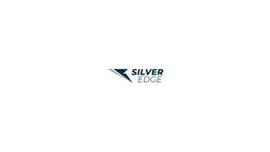

Trade Mark Journal No.2026/003 16 January 2026
UK00004317384 30 December 2025 (10,18,25,28,35,36,41)
Mark 1

Mark 2
SILVER EDGE
- Class 10
- Orthopedic footwear [shoes]; Orthopaedic footwear [shoes].
- Class 18
- Bags for sports clothing; Holdalls for sports clothing.
- Class 25
- Football boots; Football shoes; Soccer boots; Boots for sports; Studs for football boots; Football boots (Studs for -); Studs for football shoes; Soccer shoes; Boots for sport; Rugby boots; Football shirts; Sports footwear; Footwear for sports; Rugby shoes; Football jerseys; Sports shoes; Athletics footwear; Athletic footwear; Sports clothing [other than golf gloves]; Soccer shirts; Gloves for apparel; Jackets being sports clothing; Footwear for use in sport; Footwear for sport; Sport shoes; Athletics shoes; Athletic shoes; Clothing for sports; Sports clothing; Athletic clothing; Jerseys [clothing]; Sports shirts; Footwear; Sports [Boots for -]; Boots; Clothes for sports; Sneakers [footwear]; Sports jerseys; Sports garments; Sport shirts; Insoles [for shoes and boots]; Insoles for shoes and boots; Parts of clothing, footwear and headgear; Sports jackets; Sports socks; Footwear for women; Rugby shirts; Clothes for sport; Rugby jerseys; Tongues for shoes and boots; Moisture-wicking sports shirts; Sportswear; Tennis shirts; Footwear [excluding orthopedic footwear]; Soccer bibs; Trainers [footwear]; Sports caps and hats; Sports wear.
- Class 28
- Football gloves; Football equipment; Gloves for sports; Athletic protective sportswear; Football or soccer goals.
- Class 35
- Retail services connected with the sale of clothing and clothing accessories; Promotion of sports competitions and events; Promotion of goods and services through sponsorship of international sports events.
- Class 36
- Financial sponsorship of sports events.
- Class 41
- Organisation of sports events in the field of football; Organisation of sporting competitions and sports events; Organisation of sports tournaments; Services for the organisation of football events; Organising of sports and sports events; Organisation of sports competitions; Organising of sports competitions and sports events; Organising of sports events and of sports competitions; Organisation of football competitions; Organising of football events; Services for the organisation of sports events; Organisation of sporting events and competitions; Organisation of sporting events; Organization of soccer competitions; Conducting of sports events; Organising of sporting events, competitions and sporting tournaments; Arrangement of sports competitions.
Hughes Lyne Corp (HLC) Ltd